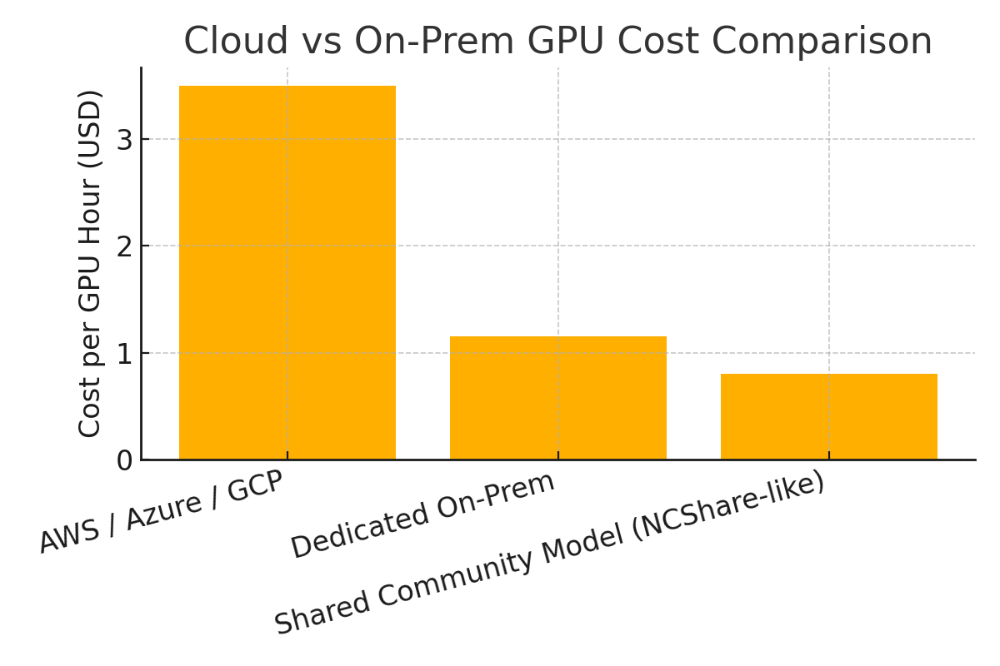
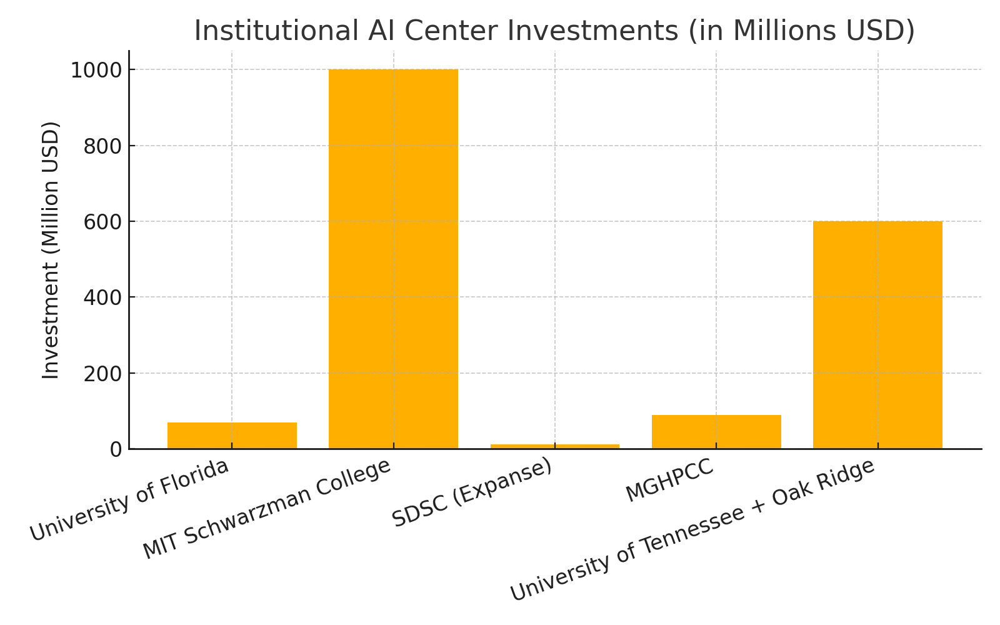

This portfolio summarizes AI data center costs, cloud vs on-prem comparisons, institutional case studies, and recommendations.
| Component | Estimated Cost |
|---|---|
| Basic Data Center Buildout (per MW) | 8M - 15M |
| High-Density GPU Racks (per rack) | 200K - 400K |
| Power & Cooling (Liquid/Direct) | 30–40% of total CapEx |
| Network Infrastructure (Infiniband/10/100GbE) | 1M – 3M |
| Category | Range / Unit |
|---|---|
| Power | $0.10 – $0.15 per kWh |
| Staffing & Ops | $500K – $1M annually per site |
| Cooling Maintenance | $100K – $300K annually |
| Hardware Refresh | Every 3–5 years (~20% annualized) |
| Support Software Licenses | Varies (open source or vendor support) |
| Platform | Cost per GPU Hour (USD) |
|---|---|
| AWS / Azure / GCP | $2.00 – $5.00 |
| Dedicated On-Prem | $0.80 – $1.50 |
| Shared Community Model (NCShare-like) | $0.60 – $1.00 |
Cost Comparison Graph
| Institution | Total Investment | Key Features |
|---|---|---|
| University of Florida – AI Supercomputing Center | $70M | HiPerGator AI supercomputer, $25M NVIDIA donation. |
| MIT Schwarzman College of Computing | $1B | Interdisciplinary AI research and policy focus. |
| San Diego Supercomputer Center (SDSC) | $11.5M | NSF-funded AI/ML HPC system (Expanse). |
| MGHPCC (Massachusetts Green HPC Center) | $90M | Shared HPC facility powered by green energy. |
| University of Tennessee + Oak Ridge (Frontier) | $600M+ | World's fastest supercomputer (as of 2022). |
Investment Graph
